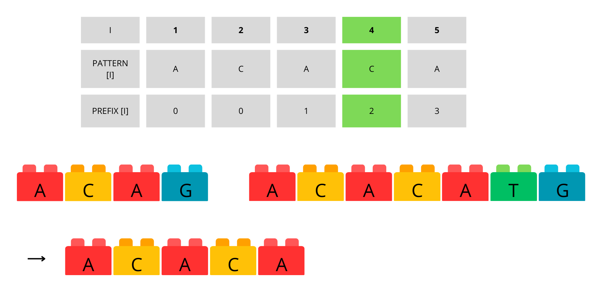
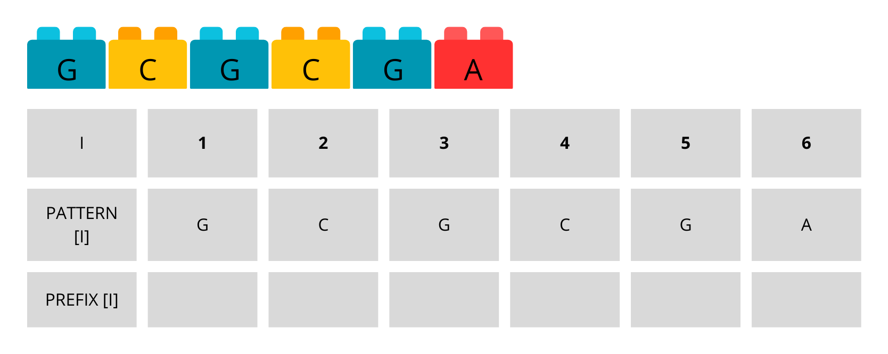
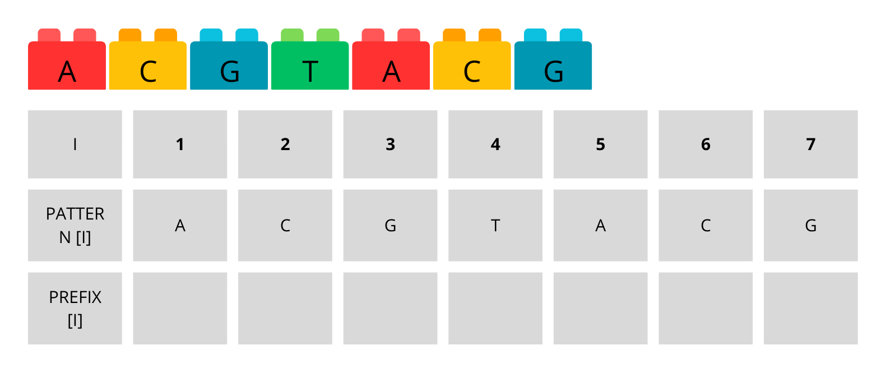

É uma das soluções mais eficientes para o problema de correspondência de padrões em uma string.
Desenvolvido em 1977 pelos pesquisadores Donald Knuth, James Morris e Vaughan Pratt
Processamento de Linguagem Neural, Ánalise de Dados e Bioinformática
=
O algoritmo KMP compara o primeiro caractere do padrão (frase ou palavra) com o primeiro caractere do texto.
Se os demais caracteres tiverem correspondência, a comparação ocorre caractere por caractere até encontrar uma diferença.
Quando uma diferença é encontrada, o algoritmo utiliza a tabela para determinar o salto necessário para o próximo caractere.
=
=
=
=
=
=

=
=
=
=
Vantagens do Algoritmo
Eficiência: Evita comparações desnecessárias, resultando em um processo de busca mais rápido.
Utilização da tabela: A tabela auxilia no cálculo dos saltos, otimizando a localização dos padrões.
Solução poderosa: O algoritmo KMP é amplamente reconhecido por sua capacidade de solucionar o problema de correspondência de padrões de forma rápida e eficiente.
Handout
Agora podem tanto fazer individualmente quanto em grupo…
…e discussões em grupo podem de fato fazer diferença…
…mas, em algum momento, é importante fazer individualmente.
Se há gabarito, veja só em último caso.
Se não há gabarito, haverá um depois.
.
Observações
Aprendizado ativo é fazer, não ler.
Exceto em um ou outro caso excepcional, uma atividade é possível sem consulta além do material de aula dado até o momento.
Além disso, muitas vezes a resposta da atividade é necessária para a compreensão do restante.
Ou seja, “deixar para entender depois” não faz sentido. “Depois” depende de “entender”.
Aviso
Precisa: Diminuir a fonte dos slides, falar da tabela (bem por cima) no funcionamento (pode ser um dos tópicos),tornar as imagens mais detalhadas (passo a passo) e maiores
1.Construindo a tabela de prefixos e sufixos
A tabela do algoritmo refere-se à tabela de sufixos e prefixos. Nesse contexto, a tabela é construída a partir dos caracteres desejados, gerando os sufixos e prefixos correspondentes. Em seguida, verifica-se o maior tamanho entre os sufixos e prefixos que são iguais. Esse tamanho é usado como um índice que indica quantos caracteres a palavra ou frase deve avançar.
Agora que aprendemos, vamos fazer alguns exercícios para fixar o conteúdo.
Exercício 1
Construa a tabela de prefixos e sufixos para:
GabaritoGabarito Detalhado
Exercício 2
Construa a tabela de prefixos e sufixos para:
GabaritoGabarito Detalhado
Exercício 3
Construa a tabela de prefixos e sufixos para:
GabaritoGabarito Detalhado
Aviso
Escrever mais (explicação dos exercícios, etc) e falar da complexidade
4.Implementação em C
O KMP usa uma tabela de falhas (também conhecida como tabela de borda) para armazenar informações sobre o padrão que são usadas para evitar comparações repetidas. A tabela de falhas é construída antes de iniciar a correspondência de padrões e é baseada no padrão a ser encontrado.
Aviso
A ser melhorado
Pergunta
Como seria uma implementação do algoritmo KMP em C?
Resposta
Aqui está um exemplo de implementação do algoritmo KMP em C:
#include <stdio.h>
#include <string.h>
void preencher_tabela(int tabela[], char padrao[])
{
int tam_padrao = strlen(padrao);
int i = 0, j = -1;
tabela[0] = -1;
while (i < tam_padrao)
{
while (j >= 0 && padrao[i] != padrao[j])
{
j = tabela[j];
}
i++;
j++;
tabela[i] = j;
}
}
void encontrar_padrao(char texto[], char padrao[])
{
int tam_texto = strlen(texto);
int tam_padrao = strlen(padrao);
int tabela[tam_padrao];
preencher_tabela(tabela, padrao);
int i = 0, j = 0;
while (i < tam_texto)
{
while (j >= 0 && texto[i] != padrao[j])
{
j = tabela[j];
}
i++;
j++;
if (j == tam_padrao)
{
printf("Padrao encontrado na posicao %d\n", i - j);
j = tabela[j];
}
}
}
int main()
{
char texto[] = "ababcabcabababcabcabc";
char padrao[] = "abcabc";
encontrar_padrao(texto, padrao);
return 0;
}
6.Comparação com outros algoritmos
Existem diversos algoritmos para solucionar o problema de correspondência de padrões, cada um com suas próprias características e complexidades.
O algoritmo de força bruta é a solução mais simples para o problema de correspondência de padrões. Ele consiste em percorrer a string de texto e comparar o padrão com cada uma das substrings. Esse método tem complexidade de tempo O(nm), onde n é o tamanho da string e m é o tamanho do padrão. Apesar de sua simplicidade, esse algoritmo não é eficiente para strings grandes ou padrões longos, já que ele realiza muitas comparações desnecessárias.
// pseudocódigo em C do algoritmo de força bruta
int bruteForce(char* texto, char* padrao) {
int n = strlen(texto); // Tamanho da string de texto
int m = strlen(padrao); // Tamanho da string de padrão
int i, j; // Índices para percorrer as strings
for (i = 0; i <= n - m; i++) { // Percorre a string de texto
for (j = 0; j < m; j++) { // Percorre a string de padrão
if (texto[i+j] != padrao[j]) // Se encontrar uma diferença, sai do loop interno
break;
}
if (j == m) // Se o índice j chegou ao final do padrão, significa que encontrou uma ocorrência
return i;
}
return -1; // Se não encontrou ocorrência, retorna -1
}
O algoritmo de Boyer-Moore, assim como o KMP, utiliza informações sobre a string e o padrão para evitar comparações desnecessárias. Ele é considerado um dos algoritmos mais rápidos para o problema de correspondência de padrões na prática, com uma complexidade de tempo média O(n/m). O algoritmo utiliza duas heurísticas: o salto ruim (bad character rule) e o salto bom (good suffix rule), para determinar o deslocamento necessário na string de texto.
// TODO: pseudocódigo em C do algoritmo de Boyer-Moore
No entanto, é importante lembrar que a eficiência dos algoritmos depende das características específicas da string e do padrão em questão. Por isso, é importante avaliar o desempenho de cada algoritmo para cada caso específico.
Ainda não foram realizados testes para comparar o desempenho do algoritmo KMP com os algoritmos de força bruta e Boyer-Moore. Na próxima sprint, vamos apresentar os resultados desses testes e comparar o desempenho dos algoritmos para diferentes tamanhos de string e padrão.